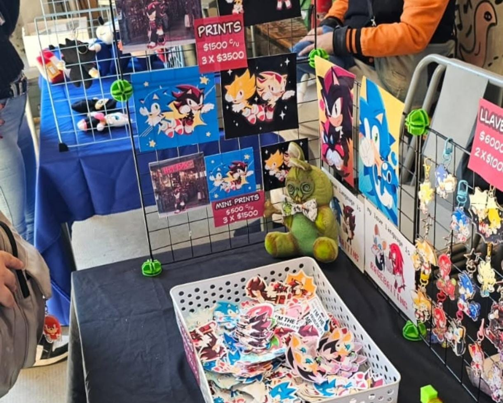
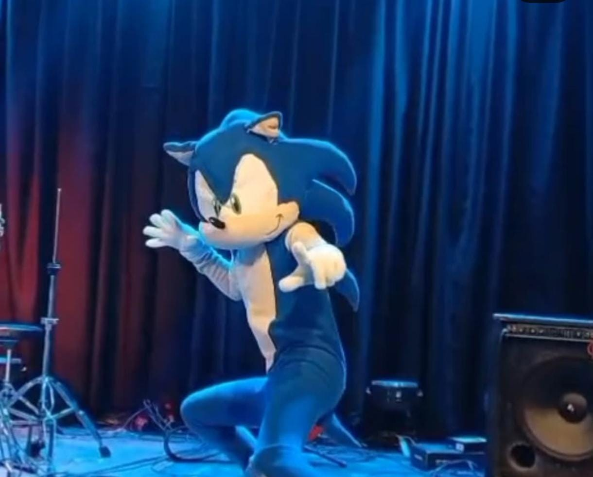
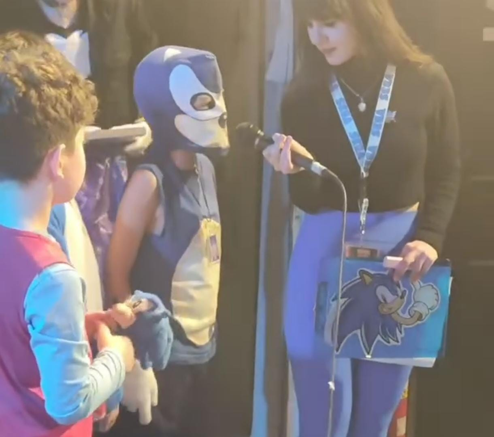
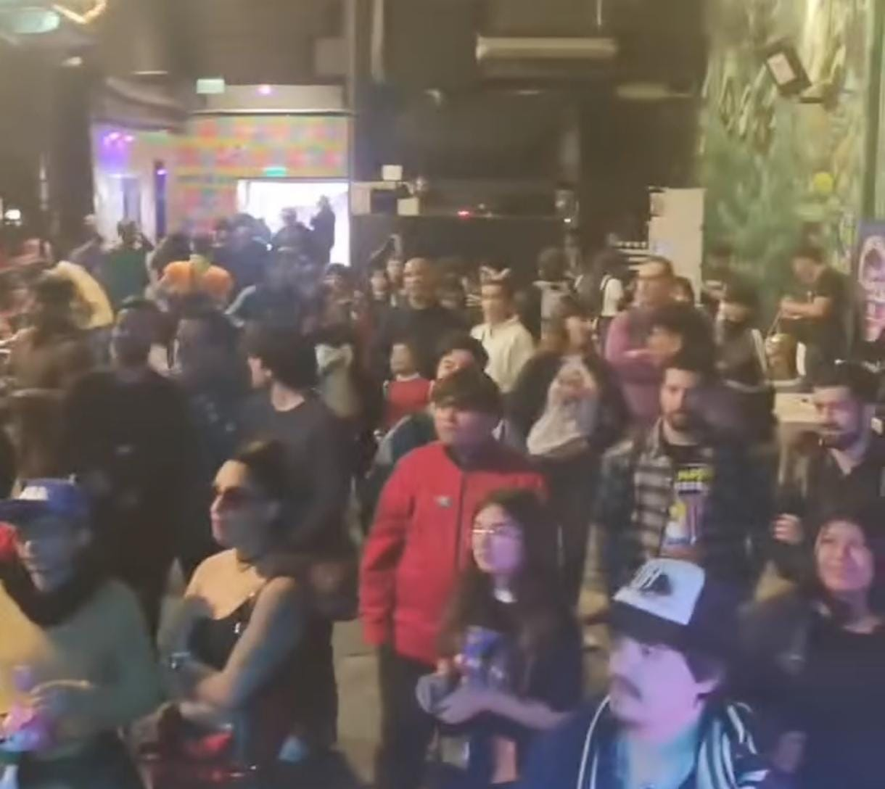

.jpg)
.jpg)
.jpg)
.jpg)
.jpg)


.jpg)


CLUB CULTURAL MATIENZO • 1 DE JUNIO 2025 • PRIMERA CONVENCIÓN
LA EXPERIENCIA DEFINITIVA DE SONIC EN ARGENTINA
🔵 EL GRAN HITO GAMER
BUENOS AIRES SE TIÑÓ DE AZUL Y VELOCIDAD. LA SONIC EXPO FEST MARCÓ LA LLEGADA DE LA PRIMERA CONVENCIÓN DEDICADA 100% A SONIC THE HEDGEHOG EN EL PAÍS, UNIFICANDO A LA "VIEJA ESCUELA" Y A LA NUEVA OLA DE FANS DE LAS PELÍCULAS.
📅 DATOS CLAVE
• FECHA: DOMINGO 1 DE JUNIO DE 2025
• LUGAR: CLUB CULTURAL MATIENZO (CABA)
• HORARIO: 13:00 A 19:00 HS
🎮 ACTIVIDADES Y ENTRETENIMIENTO
UNA EXPERIENCIA "GOTTA GO FAST" QUE INCLUYÓ:
🎸 MÚSICA EN VIVO: SHOW DE THE BADNIKS CON PURA ENERGÍA ROCKERA.
🕹️ ZONA GAMER: CONSOLAS RETRO, ACTUALES Y EL SECTOR DE CHECKPOINTARG.
🧠 TRIVIA: DESAFÍO "SONICCIENTA" CON BRENDUSHCKA.
🏆 CONCURSOS: PREMIOS A MEJORES COSPLAY Y SPEEDRUNS SORPRESA.
🎨 ARTE: DIBUJO LIBRE Y TATUAJES TEMPORALES.
📍 CÓMO LLEGARON LOS FANS
EL EVENTO FUE EN AV. JUAN B. JUSTO 2959. ACCESIBLE VÍA COLECTIVOS (166, 34, 108, ETC), TREN SAN MARTÍN (VILLA CRESPO) Y SUBTE B (DORREGO).
📝 TIPS Y REGLAS DEL EVENTO
✅ PIN EXCLUSIVO A LOS PRIMEROS 100.
✅ MENORES DE 8 AÑOS Y CUD INGRESARON GRATIS.
✅ AMBIENTE FAMILIAR CON BUFFET DENTRO.



